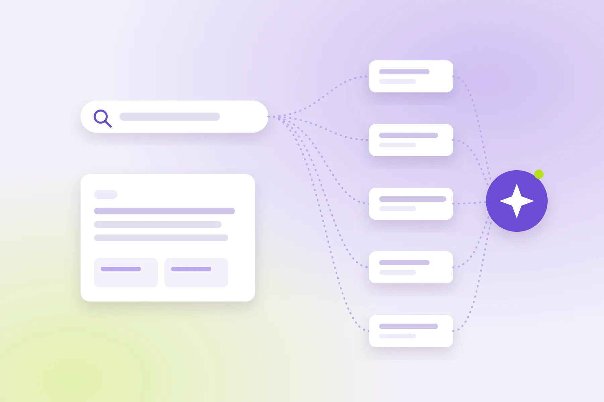

Google AI Modu ve SEO: Tıklamalar Azalırken Görünürlüğü Korumak
Google'ın AI Modu ve AI Bakışı artık Türkiye'de Türkçe kullanılıyor ve birçok sitede gösterimler yerinde dururken tıklamalar azalıyor. Bu yazıda AI Modu'nun nasıl çalıştığını, trafiğe etkisi hakkındaki verilerin gerçekte ne söylediğini ve Search Console'un yeni Üretken AI raporuyla etkiyi kendi sitenizde nasıl ölçeceğinizi anlatıyorum.

Google'ın AI Modu, 18 Şubat 2026'dan itibaren Türkiye'de Türkçe olarak kademeli şekilde kullanıma açıldı; aynı tarihte arama sonuçlarının üstünde çıkan yapay zeka özetleri, yani AI Bakışı (AI Overviews) da geldi. O günden bu yana site sahiplerinin en sık sorduğu soru aynı: "Gösterimlerimiz yerinde ama tıklamalar düşüyor, ne oluyor?"
Bu yazıda AI Modu'nun nasıl çalıştığını, trafiğe etkisi hakkında elimizdeki verinin gerçekte ne söylediğini, Google'ın resmi tutumunu ve Search Console'a eklenen yeni Üretken AI raporuyla etkiyi kendi sitenizde nasıl ölçeceğinizi anlatıyorum. Sonda da uygulanabilir bir kontrol listesi var.
1. AI Modu nedir, AI Bakışı'ndan farkı ne?
AI Modu, Google Arama içinde sohbet biçiminde çalışan, takip soruları sorulabilen ve yanıtını birden fazla kaynaktan derleyen ayrı bir arama deneyimidir. AI Bakışı ise klasik sonuç sayfasının en üstünde beliren kısa bir özettir; altında her zamanki on mavi bağlantı durmaya devam eder.
| AI Bakışı (AI Overviews) | AI Modu | |
|---|---|---|
| Nerede görünür? | Klasik sonuç sayfasının üstünde | Ayrı bir sekme / mod olarak |
| Ne zaman çıkar? | Yalnızca Google özetin faydalı olacağına karar verdiğinde | Kullanıcı modu kendisi seçtiğinde |
| Etkileşim | Tek seferlik özet | Takip soruları, sesle ve kamerayla arama |
| Klasik sonuçlar | Özetin altında görünmeye devam eder | Yanıtın içinde ve yanında kaynak bağlantıları olarak |
Türkiye'de iki özellik de Gemini 3 model ailesiyle çalışıyor ve masaüstü arama sayfasının yanı sıra Android ve iOS Google uygulamalarında sunuluyor. Açılış kademeli olduğu için bazı kullanıcılar özelliği hâlâ görmüyor olabilir.
2. "Query fan-out": tek soru, onlarca arka plan araması
AI Modu'nu klasik aramadan ayıran en önemli teknik fark query fan-out (sorgu dağıtma) yöntemi. Google'ın resmi dokümantasyonuna göre AI Bakışı ve AI Modu, bir yanıtı oluştururken "alt konular ve veri kaynakları genelinde birden fazla ilişkili arama" yapabiliyor.
Pratikte bu şu anlama geliyor: Kullanıcı "İzmir'de küçük bir e-ticaret sitesi için hangi altyapıyı seçmeliyim?" diye sorduğunda sistem arka planda "Shopify maliyeti", "WordPress WooCommerce karşılaştırma", "Türkiye ödeme altyapısı entegrasyonu" gibi ayrı sorgular çalıştırır ve her birinden en iyi parçaları toplar. Sizin sayfanız ana soruya değil, bu alt sorulardan yalnızca birine en iyi cevabı verdiği için kaynak olarak seçilebilir.
İçerik için çıkarım: Bir konuyu tek bir "her şeyi anlatan" sayfayla değil, alt soruların her birine net cevap veren bölümler ve birbirine bağlı sayfalarla ele almak, fan-out sırasında seçilme ihtimalini artırır. Bu, kanibalizasyon riskini yönetmeyi de daha önemli hale getiriyor: Aynı alt soruyu cevaplayan iki sayfanız varsa, ikisi de zayıf bir aday olur.
3. Trafiğe etkisi: veriler ne söylüyor, ne söylemiyor?
Bu konuda dolaşan rakamların çoğu dikkatli okunmayı gerektiriyor. En sağlam kaynaklardan biri Pew Research Center'ın Temmuz 2025'te yayımladığı, ABD'li yetişkinlerin gerçek tarama verisine dayanan araştırması. Buna göre AI özeti çıkan arama sayfası ziyaretlerinin yalnızca %8'inde klasik bir sonuca tıklanırken, özet çıkmayan ziyaretlerde bu oran %15. Özetin içindeki kaynak bağlantılarına tıklanması ise ziyaretlerin yalnızca %1'inde gerçekleşiyor.
AI Modu için ise "%93 tıklamasız arama" gibi çok daha çarpıcı rakamlar paylaşılıyor. Bu tür rakamlara iki nedenle temkinli yaklaşıyorum:
- Çoğu aynı birkaç çalışmaya dayanıyor. Farklı bloglarda tekrar edilen bir rakam, bağımsız olarak doğrulanmış anlamına gelmiyor.
- Etki sorgu türüne göre çok değişiyor. "X nedir?" gibi bilgi amaçlı sorgular özetle kolayca cevaplanırken, satın alma, karşılaştırma ve hizmet arama sorgularında kullanıcılar hâlâ siteye gitmeye ihtiyaç duyuyor.
Google'ın kendi açıklaması da bu tabloyu tamamlıyor: Şirkete göre AI özetlerinin bulunduğu sayfalardan gelen tıklamalar daha nitelikli; bu kullanıcıların sitede daha fazla zaman geçirme eğiliminde olduğunu belirtiyor. Yani doğru soru "trafik düştü mü?" değil, "hangi tür sorgularda düştü ve kalan trafik ne kadar değerli?"
4. Google'ın resmi tutumu: Ek bir optimizasyon gerekiyor mu?
Google'ın AI özellikleri için yayımladığı rehber bu konuda oldukça net: AI Bakışı'nda veya AI Modu'nda görünmek için ek bir teknik gereksinim ya da özel bir optimizasyon yok. Sayfanın dizine eklenmiş ve arama sonuçlarında snippet (açıklama metni) ile gösterilmeye uygun olması yeterli. Google ayrıca bunun için yeni makine tarafından okunabilir dosyalara, özel AI metin dosyalarına ya da özel schema işaretlemesine gerek olmadığını belirtiyor.
Bu, "AI SEO" adıyla satılan bazı hizmetlerin vaat ettiği gizli bir formül olmadığı anlamına geliyor. Ama hiçbir şey yapmamak gerektiği anlamına da gelmiyor: Google'ın önerdiği en iyi uygulamalar, iyi yapılmış teknik SEO'nun ta kendisi.
- robots.txt'de ve CDN/barındırma katmanında Googlebot'un taramasına izin verin.
- Önemli sayfaları iç bağlantılarla bulunabilir hale getirin.
- İyi bir sayfa deneyimi sunun (hız, mobil uyum, rahatsız etmeyen tasarım).
- Önemli içeriği görsel ya da JavaScript arkasına saklamadan metin olarak sunun.
- Metni kaliteli görsel ve videolarla destekleyin.
- Yapılandırılmış verinin sayfada görünen metinle birebir uyumlu olmasını sağlayın.
- Merchant Center ve Google İşletme Profili bilgilerinizi güncel tutun.
AI özelliklerinden gelen trafik de ayrı bir arama türü olarak değil, Search Console Performans raporunda "Web" arama türünün içinde sayılıyor.
5. Etkiyi ölçmek: Search Console'daki Üretken AI raporu
Uzun süre AI Modu'nun etkisini ayrı görmenin bir yolu yoktu; veriler genel toplamların içinde kayboluyordu. Google, 3 Haziran 2026'da duyurduğu Search Generative AI performans raporlarıyla bunu değiştirdi. Rapor önce bir grup siteye açıldı; Google'ın notuna göre 31 Ağustos 2026 itibarıyla dünya genelindeki tüm sitelere sunuluyor.
Raporu Search Console'da Performans bölümünün altındaki Üretken AI görünümünde bulabilirsiniz. Gösterdiği veriler:
| Veri | Ne gösterir? |
|---|---|
| Gösterimler | Sitenizin URL'lerinin AI Bakışı, AI Modu ve Discover'daki üretken AI özelliklerinde ne sıklıkla göründüğü |
| Sayfalar | Hangi URL'lerin AI özelliklerinde yer aldığı |
| Ülkeler | Görünürlüğün ülke bazında dağılımı |
| Cihazlar | Kullanıcıların hangi cihazda gördüğü (yalnızca Arama için) |
| Tarihler | Saatlik, günlük, haftalık ve aylık zaman serisi |
Raporun en önemli sınırlaması: tıklama, tıklama oranı, ortalama pozisyon ve sorgu verisi yok. Google ileride metrik eklemeyi planladığını söylüyor, ama şu an yalnızca "görüldünüz mü?" sorusunun cevabını veriyor.
Raporu nasıl yorumlamalı?
Bu sınırlamayla bile rapor çok işe yarıyor. Benim önerdiğim üç adımlık okuma şu:
- AI'da en çok görünen sayfaları listeleyin. Üretken AI raporundaki "Sayfalar" sekmesinden ilk 20 URL'yi alın.
- Aynı sayfaların klasik performansına bakın. Ana Performans raporunda bu URL'lerin son 3 ay ile önceki dönemi karşılaştırın. AI gösterimi yüksek, tıklaması düşen sayfalar özetlerde "cevap kaynağı" olarak kullanılıp tıklama almayan sayfalarınızdır.
- Sorgu türüne göre ayırın. Bu sayfaları getiren sorguları bilgi amaçlı ("nedir", "nasıl") ve ticari/işlem amaçlı ("fiyat", "ajans", "hizmet") olarak gruplayın. Bilgi amaçlı sorgularda tıklama kaybı beklenen bir sonuç; ticari sorgularda kayıp varsa öncelikli olarak orayı inceleyin.
6. AI Modu döneminde içerik nasıl yazılmalı?
Google ek bir optimizasyon gerekmediğini söylese de, fan-out mantığı ve özetlerin çalışma biçimi bazı içerik alışkanlıklarını öne çıkarıyor. Bunları yapay zeka destekli arama için içerik yapısı yazımda daha ayrıntılı anlattım; AI Modu özelinde öne çıkanlar şunlar:
- Her bölümün ilk cümlesinde doğrudan cevap verin. Bir başlığın altındaki ilk cümle tek başına okunduğunda anlamlı olmalı. Özetler çoğu zaman bu tür bağımsız cümleleri kullanıyor.
- Alt soruları kapsayın. Ana konunun etrafındaki 5–10 alt soruyu (maliyet, süre, alternatifler, sık yapılan hatalar) belirleyin ve her biri için net bir bölüm yazın.
- Özetin veremeyeceği şeyi verin. Kendi ölçümleriniz, ekran görüntüleriniz, karşılaştırma tablolarınız, araç ve şablonlar... Bir özetin yerine geçemeyeceği birinci elden bilgi, kullanıcının siteye tıklaması için en güçlü neden.
- Yazarı görünür kılın. Yazar adı, uzmanlık alanı ve profil bağlantıları (sayfada ve
Personşemasında) içeriğin kimden geldiğini netleştirir. Bilgilerin gerçek olması şart: Uydurma uzman profilleri, ortaya çıktığında sitenin tüm içeriğine olan güveni zedeler. - Tarih ve güncelliği belirtin. Hızlı değişen konularda yayın ve güncelleme tarihini sayfada ve
Articleşemasında açıkça gösterin; içeriği gerçekten güncellediğinizde tarihi de güncelleyin.
7. AI özelliklerinde görünmek istemezseniz
Bazı siteler, özellikle içeriğin kendisini satan yayıncılar, metinlerinin özetlerde kullanılmasını sınırlamak isteyebilir. Google'ın sunduğu kontroller şunlar:
nosnippet,data-nosnippetvemax-snippet: Sayfadan ne kadar metnin gösterilebileceğini sınırlar; AI özelliklerinde kullanımı da etkiler.noindex: Sayfayı aramadan tamamen çıkarır.Google-Extended: İçeriğin Google'ın diğer yapay zeka sistemlerinde eğitim ve temellendirme amacıyla kullanılmasını sınırlar.
Bu kontrollerin bir bedeli var: Snippet'i kısıtlamak klasik arama sonuçlarındaki görünümünüzü de etkiler. Çoğu işletme sitesi için doğru tercih, görünmeyi engellemek değil, görünürken tıklanmaya değer olmaktır.
Sonuç
AI Modu, SEO'yu bitirmiyor ama "sıralama" kavramını genişletiyor. Artık hedef yalnızca ilk sıraya çıkmak değil, yanıtların içinde kaynak olarak yer almak ve kullanıcının tıklamak için hâlâ nedeni olan içeriği üretmek. İyi haber şu: Bunun yolu yeni bir hile değil, sağlam teknik altyapı, net yazılmış içerik ve birinci elden bilgi. Kötü haber de aynı: Kestirme yol yok.
İlk adım olarak bu hafta Search Console'daki Üretken AI raporunu açın ve AI'da en çok görünen 20 sayfanızı klasik performanslarıyla karşılaştırın. Nereden başlamanız gerektiğini büyük ihtimalle o tablo söyleyecek.
Sık sorulan sorular
Google AI Modu Türkiye'de kullanılabiliyor mu?
Evet. Google, AI Modu'nu AI Bakışı ile birlikte 18 Şubat 2026'dan itibaren Türkiye'de Türkçe olarak kademeli şekilde kullanıma sundu. Özellik Google Arama'da ve Android ile iOS Google uygulamalarında bulunuyor.
AI Modu'nda görünmek için özel bir optimizasyon gerekiyor mu?
Google'a göre hayır. Sayfanın dizine eklenmiş ve snippet ile gösterilmeye uygun olması yeterli; özel bir dosya ya da schema gerekmiyor. Ancak net yazılmış, alt soruları kapsayan ve teknik olarak sağlam içerik, yanıtlarda kaynak olarak seçilme ihtimalini artırır.
AI Modu trafiği Search Console'da nerede görünür?
AI Bakışı ve AI Modu'ndan gelen trafik Performans raporunda "Web" arama türünün içinde sayılır. Ayrıca 31 Ağustos 2026 itibarıyla tüm sitelere açılan Üretken AI raporu, URL'lerinizin bu özelliklerde kaç kez gösterildiğini ayrı olarak gösterir; ancak tıklama ve sorgu verisi içermez.
Tıklamalarım düştü; içeriği AI özetlerinden çıkarmalı mıyım?
Çoğu işletme için önerilmez. nosnippet veya max-snippet gibi kontroller AI özelliklerindeki kullanımı sınırlar ama klasik arama sonuçlarındaki görünümünüzü de kısıtlar. Önce hangi sorgu türlerinde tıklama kaybettiğinizi ölçün; bilgi amaçlı sorgulardaki kayıp beklenen bir sonuçtur, asıl odak ticari sorgular olmalıdır.